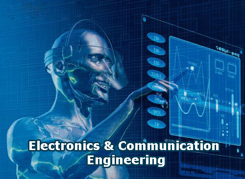

ABOUT
Electronics & Communication Engineering deals with the electronic devices, circuits, communication equipments like transmitter, receiver, integrated circuits (IC). It also deals with basic electronics, analog and digital transmission & reception of data, voice and video (Example AM, FM, DTH), microprocessors, satellite communication, microwave engineering, antennae and wave progression. It aims to deepen the knowledge and skills of the students on the basic concepts and theories that will equip them in their professional work involving analysis, systems implementation, operation, production, and maintenance of the various applications in the field of Electronics and Communications Engineering.